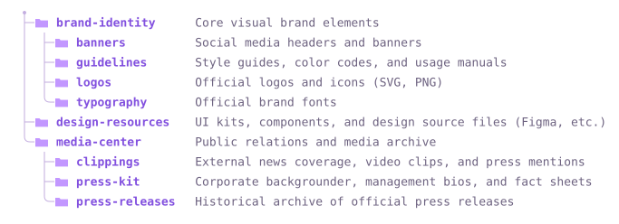

Docs
Everything to drop treegen2 into a repo — markers, options, the three styles, SVG colours, HTML output, and publishing. Todo lo necesario para integrar treegen2 en un repo — marcadores, opciones, los tres estilos, colores SVG, salida HTML y publicación. Tutto il necessario per integrare treegen2 in un repo — marcatori, opzioni, i tre stili, colori SVG, output HTML e pubblicazione.
Quick startInicio rápidoAvvio rapido
1 — Drop a placeholder anywhere in your README.md:1 — Coloca un marcador en cualquier parte de tu README.md:1 — Inserisci un segnaposto in qualsiasi punto del tuo README.md:
## Project structure [[files]]
2 — Add a workflow at .github/workflows/update-tree.yml:2 — Agrega un workflow en .github/workflows/update-tree.yml:2 — Aggiungi un workflow in .github/workflows/update-tree.yml:
name: Update file tree
on:
push:
branches: [main]
permissions:
contents: write
jobs:
update:
runs-on: ubuntu-latest
steps:
- uses: actions/checkout@v4
- uses: lucianofedericopereira/treegen2@v0.1
with:
style: ascii # ascii | svg | collapsible
<!-- filetree:start dir="src" style="svg" --> <!-- filetree:end -->
Markers & placeholdersMarcadores y placeholdersMarcatori e segnaposto
Two ways to mark where a tree goes:Dos formas de marcar dónde va un árbol:Due modi per indicare dove va un albero:
- Placeholder — a one-off token,
[[files]], optionally with attributes. On first run it expands into a managed block. Placeholder — un token de un solo uso,[[files]], opcionalmente con atributos. En la primera ejecución se expande en un bloque gestionado. Segnaposto — un token usa-e-getta,[[files]], opzionalmente con attributi. Alla prima esecuzione si espande in un blocco gestito. - Marker block — a
<!-- filetree:start … -->/<!-- filetree:end -->pair. Everything between is regenerated every run; the start line's attributes are preserved. Bloque marcador — un par<!-- filetree:start … -->/<!-- filetree:end -->. Todo lo que hay entre ambos se regenera en cada ejecución; los atributos de la línea inicial se conservan. Blocco marcatore — una coppia<!-- filetree:start … -->/<!-- filetree:end -->. Tutto ciò che sta in mezzo viene rigenerato a ogni esecuzione; gli attributi della riga iniziale vengono conservati.
Attributes live on the marker, so one file can render many directories:Los atributos viven en el marcador, así que un mismo archivo puede renderizar varios directorios:Gli attributi vivono sul marcatore, quindi un solo file può renderizzare più directory:
[[files dir="lib" style="ascii"]] [[files dir="t" style="svg" color="green"]] [[files dir="examples" style="collapsible" max-depth="2"]]
[[…]] tokens inside
fenced code blocks or `inline code` are left untouched — so you
can document the syntax in the very same file it edits.
Seguro con bloques de código. Los marcadores y los tokens
[[…]] dentro de bloques de código o `código en línea`
quedan intactos — así puedes documentar la sintaxis en el mismo archivo que edita.
Sicuro con i blocchi di codice. I marcatori e i token
[[…]] all'interno di blocchi di codice o `codice inline`
restano intatti — così puoi documentare la sintassi nello stesso file che modifica.
StylesEstilosStili
All rendered live from
examples/brand by treegen2.
Todos renderizados en vivo desde
examples/brand por treegen2.
Tutti renderizzati dal vivo da
examples/brand tramite treegen2.
# notesbloque cercado · notas # alineadasblocco recintato · note # allineate├── brand-identity/ # Core visual brand elements │ ├── banners/ # Social media headers and banners │ ├── guidelines/ # Style guides, color codes, and usage manuals │ ├── logos/ # Official logos and icons (SVG, PNG) │ └── typography/ # Official brand fonts ├── design-resources/ # UI kits, components, and design source files (Figma, etc.) └── media-center/ # Public relations and media archive ├── clippings/ # External news coverage, video clips, and press mentions ├── press-kit/ # Corporate backgrounder, management bios, and fact sheets └── press-releases/ # Historical archive of official press releases
<details>elemento <details> nativoelemento <details> nativo📁 brand-identity Core visual brand elements
📁 banners Social media headers and banners
📁 guidelines Style guides, color codes, and usage manuals
📁 logos Official logos and icons (SVG, PNG)
📁 typography Official brand fonts
📁 design-resources UI kits, components, and design source files (Figma, etc.)
📁 media-center Public relations and media archive
📁 clippings External news coverage, video clips, and press mentions
📁 press-kit Corporate backgrounder, management bios, and fact sheets
📁 press-releases Historical archive of official press releases
Folder coloursColores de carpetaColori delle cartelle
The svg style takes a color,
macOS-label style. The default github matches GitHub's own
folder colour (Primer blue) and is theme-aware. Each ships a light and dark variant.
El estilo svg acepta un color,
al estilo de las etiquetas de macOS. El valor predeterminado github coincide con el color
de carpeta propio de GitHub (azul Primer) y se adapta al tema. Cada uno incluye una variante clara y otra oscura.
Lo stile svg accetta un color,
in stile etichette di macOS. Il valore predefinito github corrisponde al colore
di cartella di GitHub (blu Primer) ed è adattato al tema. Ognuno include una variante chiara e una scura.
<!-- filetree:start dir="src" style="svg" color="purple" --> <!-- filetree:end -->

Per-marker attributesAtributos por marcadorAttributi per marcatore
Any marker overrides the workflow defaults inline.Cualquier marcador puede anular en línea los valores predeterminados del workflow.Qualsiasi marcatore può sovrascrivere in linea i valori predefiniti del workflow.
| AttributeAtributoAttributo | ExampleEjemploEsempio | MeaningSignificadoSignificato |
|---|---|---|
dir | dir="src" | Directory to scan (repo-root relative).Directorio a escanear (relativo a la raíz del repo).Directory da scansionare (relativa alla radice del repo). |
style | style="svg" | ascii, svg, or collapsible.ascii, svg, o collapsible.ascii, svg, oppure collapsible. |
color | color="green" | SVG folder colour (see palette above).Color de carpeta SVG (ver paleta arriba).Colore cartella SVG (vedi tavolozza sopra). |
max-depth | max-depth="2" | Limit depth (0 = unlimited).Limita la profundidad (0 = sin límite).Limita la profondità (0 = illimitata). |
dirs-only | dirs-only="true" | Directories only, hide files.Solo directorios, oculta los archivos.Solo directory, nasconde i file. |
exclude | exclude="dist,*.tmp" | Extra ignore patterns (.gitignore syntax).Patrones de exclusión adicionales (sintaxis de .gitignore).Pattern di esclusione aggiuntivi (sintassi .gitignore). |
use-gitignore | use-gitignore="false" | Respect the repo's root .gitignore.Respeta el .gitignore raíz del repo.Rispetta il .gitignore radice del repo. |
show-root | show-root="true" | Include the scanned directory itself.Incluye el propio directorio escaneado.Include la directory scansionata stessa. |
descriptions | desc="tree.json" | JSON of path → comment notes.JSON de notas ruta → comentario.JSON di note percorso → commento. |
svg-output | svg="docs/t.svg" | Where the SVG file is written.Dónde se escribe el archivo SVG.Dove viene scritto il file SVG. |
collapse | collapse="true" | Wrap the block in one top-level <details>.Envuelve el bloque en un <details> de nivel superior.Racchiude il blocco in un <details> di primo livello. |
open | open="false" | Render collapsibles closed.Renderiza los colapsables cerrados.Renderizza i collassabili chiusi. |
Action inputsEntradas de la ActionInput dell'Action
| InputEntradaInput | DefaultPredeterminadoPredefinito | DescriptionDescripciónDescrizione |
|---|---|---|
readme | README.md | File(s) to update. Comma/newline separated, globs.Archivo(s) a actualizar. Separados por coma/salto de línea, admite globs.File da aggiornare. Separati da virgola/a-capo, supporta i glob. |
style | ascii | Default style.Estilo predeterminado.Stile predefinito. |
color | github | Default SVG folder colour.Color de carpeta SVG predeterminado.Colore cartella SVG predefinito. |
format | auto | auto | markdown | html. |
expand-placeholders | true | Set false for HTML pages documenting [[…]].Pon false para páginas HTML que documentan [[…]].Imposta false per pagine HTML che documentano [[…]]. |
check | false | Fail if out of date; never writes.Falla si está desactualizado; nunca escribe.Fallisce se non aggiornato; non scrive mai. |
commit | true | Commit & push the changes.Confirma y envía los cambios.Esegue commit e push delle modifiche. |
Outputs: changed — 'true' if anything was updated. blocks — total tree blocks (re)generated. No python-version-style input — there's no interpreter to pin.Salidas: changed — 'true' si algo se actualizó. blocks — total de bloques de árbol (re)generados. Sin entrada del estilo python-version — no hay intérprete que fijar.Output: changed — 'true' se qualcosa è stato aggiornato. blocks — totale blocchi albero (ri)generati. Nessun input tipo python-version — non c'è un interprete da fissare.
HTML outputSalida HTMLOutput HTML
On .html files (or with format: html) the same
markers emit styled HTML — a <pre>, an
<img>, or a <details> tree. This very
page is built that way.
En archivos .html (o con format: html) los mismos
marcadores generan HTML con estilo — un <pre>, una
<img>, o un árbol <details>. Esta misma
página se construye así.
Nei file .html (o con format: html) gli stessi
marcatori generano HTML stilizzato — un <pre>, un
<img>, oppure un albero <details>. Questa stessa
pagina è costruita così.
perl bin/treegen2 --readme index.html --format html --no-placeholder
--format html(orauto) emits HTML.--format html(oauto) genera HTML.--format html(oauto) genera HTML.--no-placeholderregenerates only explicit markers, leaving literal[[files]]docs alone.--no-placeholdersolo regenera los marcadores explícitos, dejando intactos los[[files]]literales usados como documentación.--no-placeholderrigenera solo i marcatori espliciti, lasciando intatti i[[files]]letterali usati come documentazione.
CI, Pages & MarketplaceCI, Pages y MarketplaceCI, Pages e Marketplace
Keep PRs honestMantén los PR honestosMantieni oneste le PR
Fail a pull request when the README is stale instead of committing:Haz fallar un pull request cuando el README esté desactualizado en lugar de confirmar:Fai fallire una pull request quando il README è obsoleto invece di eseguire il commit:
- uses: lucianofedericopereira/treegen2@v0.1
with:
check: "true"
commit: "false"
GitHub PagesGitHub PagesGitHub Pages
Ship index.html + .nojekyll, then
Settings → Pages → Deploy from a branch → main / / (root).
Publica index.html + .nojekyll, luego
Settings → Pages → Deploy from a branch → main / / (root).
Pubblica index.html + .nojekyll, poi
Settings → Pages → Deploy from a branch → main / / (root).
MarketplaceMarketplaceMarketplace
Push public, create a release tagged v0.1, tick
"Publish this Action to the Marketplace". Consumers pin directly to that tag — pre-1.0, each release is tagged and pinned directly rather than through a floating major-version alias.
Haz push público, crea un release etiquetado v0.1, marca
"Publish this Action to the Marketplace". Quienes lo usan fijan la versión directamente a esa etiqueta — antes de 1.0, cada release se etiqueta y se fija directamente en lugar de usar un alias flotante de versión mayor.
Esegui push pubblico, crea una release taggata v0.1, spunta
"Publish this Action to the Marketplace". Chi la usa fissa la versione direttamente a quel tag — prima della 1.0, ogni release viene taggata e fissata direttamente invece di usare un alias flottante di versione maggiore.
Command lineLínea de comandosRiga di comando
Core Perl only — nothing to install.Solo Perl núcleo — nada que instalar.Solo Perl core — niente da installare.
perl bin/treegen2 --readme README.md --style svg --color green --dir src perl bin/treegen2 --readme README.md --check # preview, don't write
Run perl bin/treegen2 --help for every flag, or clone and run the test suite:Ejecuta perl bin/treegen2 --help para ver todas las opciones, o clona el repo y ejecuta la suite de pruebas:Esegui perl bin/treegen2 --help per tutte le opzioni, oppure clona il repo ed esegui la suite di test:
git clone https://github.com/lucianofedericopereira/treegen2 cd treegen2 prove -Ilib -r t